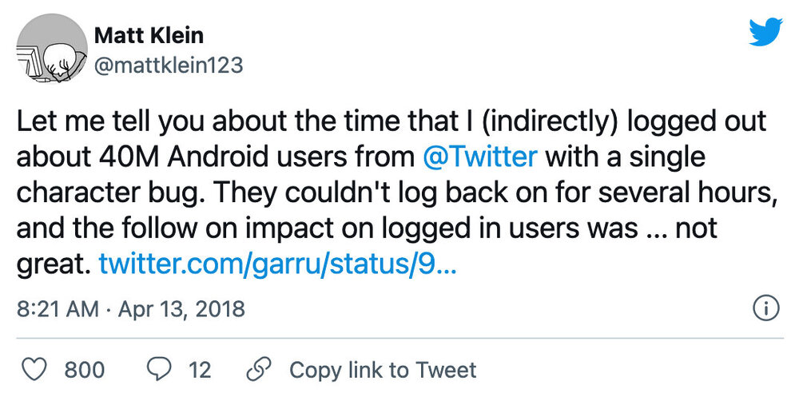
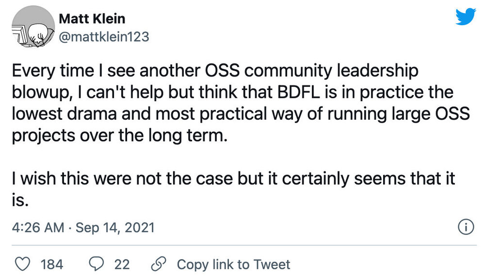

译者注：本文译自 Envoy 代理的创始人 Matt Klein 于昨晚在个人博客上发布的文章 5 year of Envoy OSS。他在 Twitter 因为自己的程序 bug 造成重大事故而离职，后加入 Lyft，在开源 Envoy 之前几乎没有贡献和管理开源项目的经验，这篇文章分享了他个人及 Envoy 开源的心路历程，在投身开源 Envoy 还是为雇主 Lyft 效命，该如何抉择？看完本文，相信对于开源项目的维护者、创业者及投资人都会大有收获。
前言
今天是 Envoy Proxy 开源的 5 周年。毫不夸张地说，在专业方面，过去的 5 年是一个史诗般的过山车，我的情绪介于兴奋、自豪、焦虑、尴尬、无聊、倦怠之间。我想分享一下这个项目的前传和历史，以及我在发展大型开源软件项目的过程中所学到的一些经验教训。
前传和历史
前传
除了一些小的弯路，我在技术行业二十年的职业生涯一直专注于底层系统：嵌入式系统，操作系统，虚拟化，文件系统，以及最近的分布式系统网络。我的分布式系统网络之旅始于 2010 年初在亚马逊，我有幸帮助开发了第一批高性能计算（HPC）EC2 实例类型。我学到了大量的底层高性能计算机网络知识，尽管我对分布式系统的概念接触有限。
2012 年，我加入了 Twitter，在经历了几次错误的开始后，我最终加入了边缘网络团队。这是我第一次真正接触到分布式系统应用网络概念。我领导了一个新的 HTTP 边缘代理的开发，称为 Twitter 流式聚合器（TSA），它在 2013 年首次推出，以扩大 Twitter 的 “firehose” API（流式所有推文）的交付。在 2014 年世界杯前夕，我们决定将 TSA 作为一个通用的 HTTP/HTTP2/TLS 边缘代理，在靠近巴西赛事的存在点（POPs）推出。这样做的主要原因是不可能在 POP 的少量主机托管机架上部署现有的基于 JVM 的资源匮乏的边缘代理。项目周期特别紧张，我的团队成功地完成了一届没有事故的世界杯。（我还清楚地记得有一段时间，当软件崩溃时，不管是什么时候，我都会给自己打上一页，修复错误，然后重新进行金丝雀部署，继续测试）。在 Twitter 工作期间，我还接触到了该公司通过 Finagle 库进行服务间网络通信的方式，并取得了巨大成功。
2015 年元旦前后，我在 Twitter 的日子里，因为我写的一个 bug，TSA 系统故障导致数百万 Twitter 的安卓用户被下线，这将是我在 Twitter 工作的尾声。

加入 Lyft 和创建 “Lyft 代理”
我在 2015 年春天离开了 Twitter，部分原因是下线事件的影响，部分原因是对没有得到晋升的挫败感，部分原因是想尝试新的东西。我跟着我的老板从 Twitter 到了 Lyft，还有我在 Twitter 的其他同事。
当我加入 Lyft 时，公司规模相对较小（少于 100 名工程师），并且正在努力从单体架构迁移到微服务架构。我已经多次谈到了 Envoy 的这部分历程，所以我不会再重述，在此简短的总结下，Lyft 遇到了所有典型的微服务迁移问题，主要是源于网络和可观察性。此外，Lyft 已经是 “多面手”（使用多种语言和框架），所以使用基于库的解决方案来解决这些问题似乎不切实际。因此，根据我以前建立 TSA 的经验和观察服务间通信在 Twitter 的工作方式，由于得到在 Lyft 的前 Twitter 同事们的信任，我提议建立一个新的应用网络系统，称为 “Lyft 代理”。
经过一些激烈的讨论，包括新的代理是否应该用 Python 构建（是的，真的），我们就项目的大致轮廓达成一致，并决定使用 C++ 作为实现语言。在当时，C++ 似乎是唯一合理的选择。今天我还会选择 C++ 吗？然而，如今已经不是 2015 年初了。
如果不说 “Envoy” 这个名字的由来，这部分的历史就不完整了。我们正在为这个项目建立最初的开发脚手架的时候，一个有远见的同事（Ryan Lane）说，我们不能把这个新项目叫做 “Lyft 代理”，我们必须选择一个更好的名字。我总是很实际，就去找辞典，查了一下 “代理”，然后决定用 Envoy 作为新名字。
在 Lyft 上线
直到 2015 年夏天，我才开始认真地研究 Envoy 的源代码。那几个月是我职业生涯中最有趣的几个月。我们应该珍惜这段初创时期，因为它不会持续很久。我花了很长时间，争取在合理的时间内（根据我的定义，这种类型的项目需要 3-4 个月的时间）做出能给 Lyft 带来价值的东西。俗话说，Lyft 给了我大量的绳子来吊死自己，而我致力于确保这种吊死不会发生。
当然，我的效率主要归功于刚从压缩的开发时间表和许多错误（主要是我自己的）中走出来，在 Twitter 的 TSA。我知道哪些错误是不能犯的，哪些抽象是需要的，哪些测试有效，哪些无效，等等。
2015 年秋天准备投入生产的 Envoy 的最初版本只包含了该项目今天所包含的功能和复杂性的一小部分。它不支持 TLS，只支持 HTTP/1，并且有极其简单的路由和弹性功能。它所拥有的是你今天所看到的东西的骨架。在这个项目的历史上，很少有重大的重构，主要是因为，正如我之前所说的，我知道将要发生什么，以及为了支持这些功能，需要有哪些抽象。Envoy 从一开始就拥有一流的可观察性输出，以指标和日志的形式。在 2021 年，这种类型的网络可观察性是桌面上的赌注（这在很大程度上要归功于 Envoy 的成功），但在当时却不是这样。
Envoy 最初是作为边缘代理在 Lyft 上线的，位于提供 TLS 终止的 AWS ELB 后面。到 2015 年秋末，Envoy 为 Lyft 的 100% 流量提供服务，该系统产生的边缘仪表盘立即得到了回报（例如，提供 API 调用百分点延迟直方图，每个终端的成功率和请求率等）。
在最初推出后不久，另一位 Twitter 同事（Bill Gallagher）加入了我的项目，我们迅速增加了一些功能，如 TLS 终止、HTTP/2 支持、更多路由和负载平衡功能等。
与此同时，Lyft 基于 Envoy 的 “服务网格 " 也开始成形了。首先，Envoy 被部署在 PHP 单片机旁边，以取代 HAProxy 及其一些固有的运维问题（例如，当时 HAProxy 仍然是单线程的），以帮助 MongoDB 的代理。可以毫不夸张地说，Envoy 的早期开发有很大一部分是针对 MongoDB 的稳定性（负载均衡、速率限制、可观察性等）。
基于 Envoy 的边缘机群和单体之间的直接观察能力的好处是非常明显的。不久之后，我们在一些高 RPS 分解的微服务旁边部署了 Envoy，以帮助排除网络问题。这方面的价值也得到了证明。随着时间的推移，我们超越了对可观察性的关注，增加了帮助系统可靠性的功能，如直接连接和服务发现（跳过内部 ELB）、异常值检测、健康检查、重试、断路等。Lyft 的基于负载的重大事件的数量从每 1-2 周一次慢慢减少。当然，Envoy 不能将所有此类事件的减少归功于此，但它提供的网络抽象确实有很大的帮助。
2016 年初，我们决定推动一个 100% 覆盖的服务网格。最初，我们认为这将是一个艰难的过程，需要自上而下的授权。在实践中，团队报名参加了迁移，因为他们将得到的好处是显而易见的。“胡萝卜 “式的迁移几乎总是成功的。而 “大棒” 式的迁移则很少成功，或者即使成功了，也会在组织内留下眼泪和愤怒。
到 2016 年中期，Envoy 被用于 Lyft 的所有网络通信，包括边缘服务、服务间通信、数据库、外部合作伙伴等。无论从哪个角度来看，该项目都取得了巨大的成功，帮助 Lyft 完成了微服务的迁移，提高了整体的可靠性，并对网络进行了抽象，使大多数工程师不需要了解真实的系统拓扑结构。此后，Bill 离开了这个项目，在 Lyft 从事其他工作，接替他的是 Roman Dzhabarov 和 Constance Caramanolis 加入我的团队。我们的小团队为整个 Lyft 开发和运维 Envoy。
开放源码
到 2016 年夏天，我们开始认真讨论开源 Envoy 的问题。早期的 Lyft 员工对开源和它为公司所做的事情很欣赏。很明显，Envoy 并不是 Lyft 的主要业务，那么为什么不把它放在那里并给予回报呢？我可以坦率地说，我们都带着不同的目标和期望来对待开放源代码的过程，以及对项目获得巨大成功后会发生什么感到非常天真。
在加入 Envoy 之前，我已经使用了相当多的开源软件，但我几乎没有开源贡献的经验，也没有维护者的经验。（虽然我在 Linux 内核中有过一次提交！）开源 Envoy 似乎是一个很好的机会，可以扩展我的技能组合，学习新的东西，可能会促进我的职业生涯，坦率地说，我不希望有一个 TSA v3 在第三家公司出现。对于 Lyft 来说，Envoy 是一个重要的工程项目，领导层认为，开放源代码将使 Lyft 作为一个工程组织具有可信度，并有助于招聘工作。正如我之前所说，我们所有人都对创建成功的开源，更重要的是在它获得成功的情况下培育它所需要的东西感到天真。
但是，我们决定给它一个机会。我们在 2016 年夏天花了很大一部分时间来编写文档（Jose Nino 在这个时候加入了团队，他的第一个任务就是阅读并帮助改进所有的文档），清理存储库，使其 " 不那么尴尬”，制作网站，发布博文等等。我真的很感谢这段时间里我在 Lyft 的同事，他们不仅支持我们，还帮助我们完成了无数的任务，包括网站设计、logo 等等。即使在这个早期阶段，我们也觉得第一印象很重要，如果我们要在开源领域有所作为，就必须通过高质量的文档、网站等给人留下良好的第一印象。
在此期间，我们还利用我们的行业关系，与 Lyft 的一些 “同行公司”（湾区的 “独角兽 " 互联网创业公司）会面，向他们展示我们在 Envoy 方面所做的工作，并获得他们的反馈，我们认为如果我们在正式开源前成功获得一个启动合作伙伴，这将是对项目的一个重大帮助。所有这些会议都非常友好，总的来说，所有与我们会面的公司都对我们所取得的成就印象深刻。但是，事后看来，他们都表示，以他们的小型基础设施团队，不可能马上采用 Envoy。他们祝愿我们在开放源代码方面取得最好的成绩，并说他们以后会回来看看。我们不禁对这些会议的结果感到沮丧，但我们还是向前推进了。
2015 年 8 月，我与谷歌进行了第一次友好的会面。一个 Lyft 的同事（Chris Burnett）在一个 gRPC 聚会上发言，提到了 Envoy，因为它与 Envoy 的 gRPC 桥接支持有关。我不知道的是，谷歌在发现 Envoy 的时候，正准备在 NGINX 的基础上推出 Istio。一次会议引出了另一次会议，然后是更多的会议，在 Envoy 开源之前，大量的谷歌员工已经看到了源代码和文档。(稍后会有更多关于这方面的内容）。
到 9 月初，我们已经准备好了，并将开源日定为 9 月 14 日。总的来说，我是一个（过度？）自信的人，但在我的生活中，有几次我对自己成功的能力有很大的焦虑。我立即想到的是：开始上高中，开始上大学，以及大学毕业后在微软工作。而开源的 Envoy 就是其中之一。我记得我被公众的反应吓坏了。人们会怎么说？反馈会是积极的还是恶毒的？虽然我们在开源时是一个小团队，但我仍然写了 90% 或更多的代码，并且觉得把它放到公共领域是对我自己和我的能力的一种反映。
如期而至，Envoy 在 2016 年 9 月 14 日 成为开源产品。我记得我和妻子一起庆祝，并说了一些话。“如果我们能让其他公司像 Lyft 一样使用 Envoy，我就会很高兴。”
对开放源码发布的反应几乎是普遍的积极。令我们惊讶的是，几乎是立刻，我们开始听到大公司的声音，而不是小公司。在几周内，我们与苹果、微软进行了交谈，与谷歌的对话也不断加快。大公司在现有的解决方案中存在问题，并且有大量的团队准备投入到解决这些问题的工作中。具有讽刺意味的是（至少在 Twitter 的观点中），C++ 在这里是一种帮助，而不是一种阻碍。这些大公司都已经拥有充足的 C/C++ 开发资源，以及他们想要整合的现有库，等等。对他们来说，C++ 是一个卖点。
在这段时间里，毫不奇怪，我们与谷歌的人有最多的互动。最初主要是构建 Istio 的团队，但渐渐地，我们与 Anna Berenberg 花了更多时间，她现在是谷歌的杰出工程师，领导各种网络和负载均衡工作。这种关系将产生 " 喷气燃料”，在 2017 年初真正启动该项目。
开始起飞
到了 2017 年初，很明显，Envoy 的开发正在加速。谷歌承诺用 Envoy 取代 NGINX，用于 Istio（最终在 2017 年春季推出），对项目的未来来说更重要的是，Anna 的大型团队致力于 GCP 云负载均衡功能，他们开始向使用 Envoy 的各种云负载均衡产品以及内部用例（这在这个时期都是非常秘密的，但现在已经众所周知）。
我将永远记得与谷歌互动的那段时间是我职业生涯中最紧张的时期之一。说实话，那感觉就像一个收购（审讯）过程。我记得长长的会议和电子邮件线程，以证明我们的技术决定，“面试 “中，谷歌试图确定我们是否会成为一个好的开源项目合作伙伴，等等。当时我们很痛苦地发现，这次” 收购 " 将使 Envoy 进入一个我们自己永远无法实现的轨道，所以我们尽一切努力使它获得成功，最终也获得了成功。而且，在过去 4 年多的时间里，我们与谷歌的合作确实是一种杰出的伙伴关系。早期的谷歌云工程师最终成为维护者，Harvey Tuch 和 Alyssa Wilk，为项目带来了大量的人才，包括技术上的，以及对开源和社区的支持。我对他们的感激之情溢于言表，没有他们，项目就不会有今天的成就。多年来为该项目做出贡献的其他谷歌工程师（现在有很多），除了普遍是优秀的社区管理者之外，还为该项目增加了大量的工程力量，否则该项目就不会有。我当然对最初的谷歌合作关系有顾虑（技术和理念上的分歧，等等），但我可以诚实地说，这些顾虑都没有成为现实。
除了确保 Istio 和 GCP 团队与谷歌合作的成功之外，我们还花了大量时间与其他公司和维护者合作并加入他们，其中许多人对项目产生了巨大的影响，至今仍作为维护者、贡献者或用户大量参与。如果没有这些早期的社区成员，这个项目就不会有今天，我也非常感谢他们对项目的信任。
同时，随着项目的不断深入，我开始收到大量投资者对 Enovy 的兴趣。有强烈的愿望让我离开 Lyft，围绕这个项目开一家公司。我写过这部分的旅程，所以我不会在这里重述，留在 Lyft 我会有大量的时间和精力来处理所有这些互动。正如链接的文章所描述的，我最终决定留在 Lyft，不开公司，以支持 Envoy 的持续成功。
与此同时，我仍然在 Lyft 工作，正如我将在后面进一步讨论的那样，我越来越多地从事两份工作。我的第一份工作是在内部领导网络团队，并在运营上支持 Lyft 的 Envoy。我的第二份工作是作为 Envoy 的公众形象，包括 OSS 领导，代码审查，修复错误，编写可以促进项目的功能，在会议上发言，帮助其他公司采用和部署 Envoy，等等。我开始变得过于分散，并出现了倦怠的迹象。然而，到了 2017 年年中，不可否认的事实是，Envoy 的发展轨迹是大大的 “向上和向右”。各大公司、“同行公司”、垂直产品和服务等的采用率继续攀升。
捐赠给 CNCF 且感到倦怠
到 2017 年秋天，有两件事是清楚的。
- Envoy 已经超出了 Lyft OSS 设备所能提供的范围。该项目需要法律、公共关系、营销、活动组织等方面的帮助。
- 我很快就完全倦怠了，需要找出一条可持续发展的道路。
为了解决第一点，我们最终同意考虑将 Envoy 转交到 CNCF。数月来，CNCF 一直在追求该项目，但似乎从来没有任何令人信服的理由来加入。到 2017 年底，很明显，CNCF 的资源即使不是净收益，也至少对项目是中性的。我们开始了提交程序，并最终在我们最初开放项目资源的几乎整整一年后加入了该基金会。我很感谢 Alexis Richardson 和 Chris Aniszczyk 在这个过程中对项目的指导。
第二点则要复杂得多。从根本上说，我的工作时间超过了我的工作能力，有效地跨越了两个不同的工作。此外，我正在期待我的第一个孩子，预产期在 2018 年初，随着到来的日期越来越近，这让我越来越焦虑。到这个时候，我已经很清楚，我在设定期望和界限方面做得不够好，不知道自己能够为 Lyft 提供什么，同时也没有从行业的角度关注 Envoy 的持续增长。在 Lyft，我越来越放任自流，陷入人际关系的争吵，在为更多的初级团队成员提供指导和领导方面，没有达到我这个级别的期望。
简而言之，我当时正处于崩溃的边缘，最终我选择了 Envoy 而不是 Lyft，这对我的 Lyft 同事造成了伤害。我想，如果我在 2017 年初至年中对我的工作量与 Lyft 的领导层更加透明，我可能会避免一些最糟糕的结果，但不幸的现实是，为开源软件行业的工作提供资源，而这些工作对雇主没有立即明显的作用，这是一个复杂的努力。它可能会更顺利，也可能不会。在任何情况下，虽然我对一些我本可以处理得更好的人际关系问题感到遗憾，但无论好坏，我都不后悔把精力放在 Envoy 上。我优先考虑的是 Envoy，而不是 Lyft，我做了我认为当时必须做的事情，以使它成功。
可持续发展道路
我的第一个孩子在 2018 年 2 月出生，Lyft 极其慷慨的陪产假政策为我提供了休息和放空自己的时间。我从 Lyft 获得了一些空间，并开始更深入地思考我想要什么以及什么对我来说是可持续的。
当我休完陪产假回来后，我与 Lyft 领导层明确表示，我不能再参与 Lyft 的 Envoy 的 “日常” 运维。相反，由于 2017 年底的一些后果，基础设施团队也希望与我分开一些。由于这个原因，我大幅后退，实际上完全停止了在 Lyft 的基础设施工作，在 2018 年年中至年末的 Lyft Bikes 和 Scooters 初始版本中编写固件网络代码。这是一个了不起的团队努力，在压缩的时间范围内得到了一些东西，我真的很喜欢在几个月内做一些完全不同的事情。
2018 年也是我积极开始琢磨在 Envoy OSS 社区中 “取代自己” 的那一年。我花了大量的时间（并将继续花大量的时间）来培养维护者、新的贡献者，组织第一次专门的 EnvoyCon，等等。任何领导者都应该有一个目标，那就是确保该组织在有一天该领导者退位时能够继续良好地运作。
到 2018 年底，我的主要职业倦怠风险已经得到解决，我又开始了合理的工作时间，并花了很多时间与我的妻子和儿子在一起，我的时间大致在 Envoy OSS 工作和 Lyft 的一般基础设施领导之间各占一半。明确地说，Envoy 的成功带来的特权使我能够在 Lyft 的工作生活中取得这种平衡。随着时间的推移，随着我的行业地位的提高，我的影响力也在同步增加，这使得我更容易按照自己的意愿设定就业条款。没有多少人有这样的运气，我明白我是多么幸运，能够 “突破 “倦怠墙的另一边而不必离开我的工作。
Envoy 长大了
自 2019 年以来，因为新冠疫情，我在 Lyft 的基础设施领导和 OSS 领导之间继续保持着我上面描述的五五开的比例。当然也有单调和渴望不同的时候（从历史上看，我是一个习惯性换工作的人，6.5 年是迄今为止我在一件事情上工作的最长时间），但总的来说，我很高兴看到 Envoy 从一个 “新秀 " 变成更多的 “少年”。我不再专注于做我所能想到的一切，使 Envoy 获得巨大的成功，因为坦率地说，Envoy 是一个巨大的成功，已经席卷了市场，并改变了用户对应用负载均衡工具的期望。相反，我更关注项目的可持续性。我们是在做长期的工作，这些天我觉得自己更像一个 CEO，看减员人数、优先级、预算编制、安全问题等等。这并不是说这不是有用的工作；它显然是有用的，它只是与早期的工作不同，早期的工作技术性更强，节奏更快。
截止到 2021 年末，我对 Envoy 最引以为豪的事情是，在我看来，这个社区已经可以自我维持了。我们有一群令人难以置信的维护者、贡献者和用户，他们对项目的成功充满热情，并在使 Envoy 成为今天的样子中发挥了作用。这确实是一个团队的努力。
经验教训
过去的 5 年是一个史诗般的旅程。虽然我觉得我在技术上学到的东西相对较少，但我在领导力、社区建设和所有其他非技术性的东西方面都得到了成长和学习，这些都是建立一个成功的企业，无论是企业还是一个主要的开源成功故事。以下是我对一些主要学习内容的简短总结。
成功的开源软件就像创办一个企业
也许有争议的是，我认为如果一个人有目标要创建一个非常成功的开源软件项目，他们需要把它想成一个企业。除了核心技术之外，创业还涉及很多因素：
- 招聘（在开源软件中，这意味着招聘贡献者和维护者）
- 获取客户（在开源软件中，这被转化为用户）
- 文档和技术写作
- 公共关系
- 市场营销
- 法律（商标、许可等）
- 人力资源（在开源软件中，这将转化为解决社区纠纷和制定文化）
- 资金（在开源软件中，这转化为辅助费用，如 CI、为维护者找到允许他们在项目中部分或全部时间工作的工作，等等）
- 总的说来，就是领导和方向的确定。资源有限，有很多事情可以做。企业 / 项目需要专注于最重要的事情，以实现产品的市场适应性。
直观地说，我知道这一点，在最初为 Envoy 进行开源努力时，我积极地追求上述所有的领域，努力使项目从开始发展到今天的规模。上述列表中的每一项都很关键，如果没有所有这些，一个项目是不可能成功的，尤其是在技术领域有很多资金雄厚的公司竞争对手的情况下。
我强烈鼓励那些考虑进行大规模开源工作的人提前在上述领域进行投资，以便在第一天就给人留下最佳印象。此外，新的开源项目应该准备在项目成长并开始看到采用时，在上述领域进行更多的投资。
毫不奇怪，这些天我在 Envoy 上做的编码工作相对较少。我在项目上的时间主要是管理项目的所有非技术方面（上述列表中的所有内容，甚至更多！），并确保事情按计划进行。我所做的大多数编码项目都是 “清洁 " 的幕后项目，对项目有好处，但没有什么乐趣，也不可能激励其他贡献者（当然，我对他们每天的工作没有发言权，我有动力让他们尽可能的开心，这样他们就不会离开）。
终端用户驱动的开源软件是一种结构性优势
这些天来，很多 “大的开源软件”，特别是在基础设施领域，是由大公司和风险投资支持的初创公司资助的。我不会绕到关于开源软件的困难经济的讨论，因为我已经写过了。我想说的是，我坚信终端用户的开源软件比企业和风险投资支持的开源软件有很大的优势：最初的客户几乎肯定会从软件中获得价值，否则软件就不会得到资助。这种与客户一起建立东西的良性循环是非常强大的。它几乎普遍导致了更好的结果：软件更可靠、更专注、功能更少。有很多由最终用户驱动的开源软件的例子，然后取得了巨大的商业成功。鉴于坚实的基础和内在的产品市场适应性，这对我来说并不奇怪。我希望看到比今天更多的最终用户驱动的开源软件，尽管我认识到经济上是困难的。对于那些有机会的人来说，请向这种类型的软件所具有的结构性优势靠拢！
不要跟风，要跟随客户
这也许是 “成功的开源软件就像创业” 和 “最终用户驱动的开源软件是一种结构性优势” 的必然结果，但我无法强调坚持不懈地关注客户的实际需求而不是炒作周期所认为的客户需求是多么关键。例如，多年来，人们一直在嘲笑 Envoy 是用 C++ 编写的，这引起了无数的笑话。我喜欢 C++ 吗？不，不是很喜欢。它是否在 2015 年完成了工作，并吸引了最初的一批主要用户？肯定是的。这是一个关注客户和市场的例子，而不是屈服于没有实际 “商业 " 影响的炒作。如果一个人把开源软件当做一个企业，就会立刻明白，以客户和市场为中心是取得巨大成功的唯一途径。在 Envoy，我花了大量的时间为终端用户争论，以确保我们建立的东西能让所有人受益，而不仅仅是一小部分小众用户。
可扩展性是至关重要的
跟着客户走往往会导致客户的要求不能很好地融入项目的架构中。从开源软件的角度来看，失去对项目主要目标的关注会导致功能蔓延、软件无法维护和维护人员负担过重。同时，说 “不 " 也是失去潜在用户的一个保证。
对于 Envoy，我想确保我们至少可以说 “是的，但是……"，即提供一个强大的可扩展性模型，让用户可以满足他们的需求，而不需要将每一个改动和功能都推到上游。这种策略已经多次得到回报，它减轻了维护者的负担，让用户能够解决他们自己的问题，更重要的是，将 Envoy 推向了我在最初设计该软件时从未想象过的用例。
可扩展性，特别是对于开源软件的构建模块，是至关重要的。
质量问题
跟随客户的另一个推论是，质量确实很重要。用户希望软件易于操作，相对来说没有错误，关心安全，等等。曾几何时很多人会觉得因为开源软件是 " 免费的”，所以质量就得不到保证。这在理论上也许是正确的，但实际上，在一个项目对软件质量认真对待之前，用户不会大量地聚集在一个软件上。因为获得用户是一个飞轮，可以获得更多的用户（特别是当从早期采用者转向晚期采用者时），所以确保为整个软件质量编列时间预算就更加关键了。
关于 Envoy，我一直有一个 “零碰撞” 的理念。任何崩溃都会被调查和修复，无论多么不频繁的错误。这种对稳定性和质量的关注不会被忽视。
社区是扩大规模的唯一途径
这很明显，但我还是要说：社区是扩展开源软件的唯一途径。这是一个由维护者、贡献者和用户组成的社区。此外，社区的基调在项目开始时就已经确定，而且极难改变。人类倾向于遵循规范。一旦规范被确定下来，无论规范是什么，与这些规范不一致的人都会被避开。因此，项目最初的公共基调对于设定其长期的社区轨迹极为关键。
当我们把 Envoy 做成开源软件时，我在 GitHub 上投入了大量的精力与人们一起工作，使用建设性和欢迎性的语言。总的来说，我尽我所能让 Envoy 成为一个受欢迎的地方，让人们愿意来贡献自己的力量，无论是维护、偶尔的贡献，还是用户帮助其他用户。
在 Envoy 所取得的所有不同类型的成功中，到目前为止，给我带来最多个人满足感的部分是，有相当多的人告诉我，他们已经发誓不再使用开源软件，尤其是基础设施开源软件，因为他们觉得大多数项目中的人对彼此感觉都很糟糕。相反的，他们喜欢为 Envoy 做贡献，因为这个社区是如此的尊重和欢迎彼此。这需要大量的努力和纪律，尤其是在项目的早期，才能达到这样的结果，而这已经得到了众多的回报。
不要低估从一开始就确定项目的文化和基调的复合效应。
混合商业和开源软件的利益是非常困难的
已经有很多关于开源软件的困难经济学的文章（包括我自己的文章，我在上面提到的）。我只想说，试图将商业上的成功和开放源码的成功结合起来是非常困难的，主要是因为这些成功往往是相互矛盾的。
我相信，Envoy 通过其强大的 API 和可扩展性系统穿透了这个矛盾。从本质上讲，Envoy 已经成为一个工具，现在被大量的垂直产品和服务所使用。这就产生了一个社区，该社区充满了选择在一个共同的基底上合作的公司，即使是通过在扩展 / API / 控制平面 / UI/UX 层上的创新，推出相互竞争的上层产品。
任何成功的开源项目都会看到大量的商业 / 投资人的兴趣。如果一个项目的目标是保持一个充满活力的社区，同时又能取得商业上的成功（我认为这对整个项目的成功是必要的，因为钱必须来自某处），那么预先考虑如何将核心层和商业层分开是极其重要的。这样做的实用性和策略会因项目和技术的不同而不同，但我相信专注于强大的 API / 扩展性的分割是一个富有成效的策略。
基金会是很棘手的
在现代的开源讨论中，有很多关于基金会的作用的讨论。我不打算对这一话题做大量的评论，但我的主要建议是不要被基金会和它们可能提供的理论利益所干扰。相反，要积极地关注产品的市场适应性，生产高质量的软件，并为用户提供价值。如果这些事情得以实现，其余的事情就会自然而然地发生。
对于非常成功的项目来说，基金会，更确切地说，中立的商标持有地，是非常有用的，所以我肯定会在那个时候考虑加入一个。随着项目的成熟，Envoy 从成为 CNCF 的一部分所获得的价值也在不断增加。CNCF 雇佣了开源软件律师、营销人员、公共关系人员、一流的活动人员等等。这些额外的资源在 “经营业务 " 方面是非常宝贵的。
提前考虑治理问题
开源治理是非常困难的。就其本质而言，开放源代码是无政府的，没有明确的领导结构。没有一个适合所有项目的治理方法，每个项目都必须找到自己的前进方向，可以通过 “BDFL”/CEO 类型的模式、指导委员会、类似 Apache PMC 的程序等。所有的治理模式都有优点和缺点，并且有不同的失败模式。
最重要的是，在项目变得庞大和成功之前，先认真思考治理问题。写下一套规则和规范，特别是花时间记录项目的冲突解决过程。
同时也要意识到，根据我在上面关于社区规范如何在早期设定的评论，早期的项目维护者将对整个对话和冲突解决的风格产生巨大的影响，就像公司的早期员工对公司的文化产生巨大的影响一样。
在我的印象中，我们在 Envoy 内部非常幸运，没有发生过任何重大分歧，出现的问题也可以迅速友好地解决。在项目的历史上，我们从来没有需要援引维护者投票程序来解决冲突。在我看来，这是一个巨大的成就，也是对所有维护者的素质和专业性的证明，尤其是考虑到该项目已经变得如此受欢迎，以及围绕它的所有商业利益。
对开源贡献的期望是至关重要的
我在上面提到过这个问题，但我自己的职业倦怠很大程度上是由于我没有很好地与我的雇主就我需要花多少时间来管理 Envoy 的开源增长设定合理的期望。我不会撒谎说，进行这样的对话就能神奇地使雇主为某人腾出大量时间来从事开源工作，特别是那些可能不直接适用于其日常工作的项目。话虽如此，我确信对所有参与的人来说，对开源过程有公开和诚实的期望是非常重要的。以下是在开源项目之前或开始以开源身份工作之前要问的合理问题：
- 雇员应该问他们的雇主，为什么他们要开放源代码？
- 雇主应该问他们的员工，为什么他们要开放源代码？(这个问题的答案和前一个问题的答案不同是完全合理的，但应该在公开场合讨论)。
- 雇员应该问他们的雇主，如果项目成功了，会发生什么？该项目将有哪些资源可用？员工将有多少时间可以在通用的开源软件问题上工作，目的是直接推动项目的发展？
雇主和雇员之间不匹配的期望是未来怨恨和倦怠的根本原因。
代理容易，API 难
对一些人来说，Envoy 提供的底层网络代理机制似乎是这个项目的复杂部分。事实证明，与为 Envoy 发展一个稳定的 API 生态系统所做的工作相比，代理部分（在我看来）相对简单。平衡人类和计算机消费的 API 人体工程学，保持不同版本的稳定性，发展 API 以支持其他客户端，如 gRPC，指定协议语义以使 Envoy 能够与数百（可能是数千）个不同的管理服务器对话，等等，都是非常复杂的。我为团队在这一领域取得的成就感到骄傲（特别要感谢推动这一工作的 Harvey），即使在这一过程中出现了一些错误（比如从 API 的 V2 版本强制迁移到 V3 版本）。
如果一个软件提供了一个 API，而且更重要的是希望这个 API 成为其他系统的关键组件，那么不要低估提供一个稳定和符合人体工程学的 API 的成本和复杂性。反过来说，强大的 API 是一个生态系统飞轮的重要组成部分，会以此产生更多的产品和用户，所以在我看来，这些努力是非常值得的。
不要忽视职业倦怠
如果一个人想成就大事业，我不相信他可以 100% 实现良好的工作生活平衡。现实情况是，任何成功都是由现有的特权 / 机会、一个好的想法、良好的执行力和大量的运气（包括在正确的时间出现在正确的地点）组成的。所有这些东西都在 Envoy 中发挥作用，我不会假装我没有把自己搞得很累，特别是在 2017 年。我也会重新做一遍 2017 年的工作，因为从我的角度来看，我做了我必须做的事情，使项目获得成功。(有时我想，如果我已经有了孩子，Enovy 是否还会诞生。我不确定它是否会发生，但这是一个更长的谈话主题！)
综上所述，我在 2017 年描述的那种史诗般的推动力只能持续这么久，直到一个人崩溃。我鼓励大家不断反思自己的工作生活平衡，并为自己找出一条可持续发展的道路。每个人的情况都不同，我不能提供任何一个避免职业倦怠的建议，但我认为反思是一个好的开始，也是我自己不得不努力的事情。
感谢
在过去 6 年半的时间里，在 Envoy 上工作，其中 5 年是作为开源软件，这是我职业生涯中的亮点。这个项目的成功确实是一个团队的努力，我一个人是不可能完成的，我为我们所有人（维护者、贡献者和用户）共同完成的事情感到非常自豪。在这个项目上工作的维护者和贡献者是我所共事过的最好的工程师群体，他们才华横溢，他们就职在不同公司，位于不同的地理位置，这真是开源的理论潜力在实践中的体现。作为一个团队，我们已经产生了世界性的影响，改变了用户对软件负载均衡系统的期望，同时也建立了一个充满活力和热情的社区。在我最疯狂的梦想中，我从未想过这个项目会成为今天的样子。
对我来说，未来会发生什么就不那么清楚了。正如我上面所说的，我的重点已经转移到了可持续性上。我想确保，如果有一天我离开了，这个项目将保持健康。尽管如此，这一天还没有到来，我期待着在可预见的未来帮助领导项目前进，希望能取得更大的成功和采用。向前迈进！